Clase 3 Manipulación y visualización de datos
“Happy families are all alike; every unhappy family is unhappy in its own way.” — Leo Tolstoy
“Tidy datasets are all alike; but every messy dataset is messy in its own way.” — Hadley Wickham
Comencemos nuevamente cargando el paquete tidyverse:
library(tidyverse)La visualización es una herramienta importante para generar información. Sin embargo, es muy raro obtener los datos exactamente en la forma en que se necesitan. Es común tener que crear nuevas variables o hacer resúmenes a partir de algunas variables, o tal vez sólo sea necesario cambiar el nombre de las variables o reordenar las observaciones con el fin de facilitar el análisis de datos.
Pipeline
La idea de pipeline intenta hacer el desarrollo de código más fácil, en menor tiempo, fácil de leerlo, y por lo tanto, más fácil mantenerlo.
En el análisis de datos es común hacer varias operaciones y se vuelve difícil leer y entender el código. La dificultad radica en que usualmente los parámetros se asignan después del nombre de la función usando ().
La forma en que esta idea logra hacer las cosas más faciles es con el operador forwad pipe %>%que envía un valor a una expresión o función. Este cambio en el orden funciona como el parámetro que precede a la función es enviado (“piped”) a la función. Es decir, supongamos x es una valor y sea f una función, entonces, x %>% f es igual a f(x).
Por ejemplo, sea \(f(x)\) la función de probabilidad de la distribución normal con media \(\mu = 0\) y desviación estándar \(\sigma = 1\): \[ f(x) = \dfrac{ 1 }{\sqrt{2\pi}} e^{- \frac{1}{2} x^2 } \]
f <- function(x){
exp(-(x^2)/2)/sqrt(2*pi)
}
# Con el operador de pipe
0 %>% f
#> [1] 0.399que de forma tradicional se realiza:
# Forma tradicional
f(0)
#> [1] 0.399En resumen %>% funciona como se muestra en la siguiente figura:

Nota: Se puede insertar el pipe %>% utilizando: Cmd/Ctrl + Shift + M.
 ¿Qué hace el siguiente código? ¿Qué hace
¿Qué hace el siguiente código? ¿Qué hace .?
df <- data_frame(
x = runif(5),
y = rnorm(5)
)
df %>% .$x
df %>%
ggplot(data = ., aes(x = x, y = y)) +
geom_point()
Tibbles
Tibbles son dataframes con algunas modificaciones que permitirán trabajar mejor con los paquetes de limpieza y manipulación de datos tidyr y dplyr.
Una diferencia son los tipos de columnas que maneja:
lgl:vectores de valores lógicos, vectores que contienen TRUE o FALSE.int: vectores de números enteros.dbl: vectores de números reales.chr: vectores de caracteres, strings.
Imprime ds y as.data.frame(ds). ¿Cuál es la diferencia entre ambas?
ds <- tbl_df(mtcars)
ds
as.data.frame(ds)
tibble.
3.1 El principio de datos limpios
Los principios de datos limpios (Tidy Data de Hadley Wickham) proveen una manera estándar de organizar la información:
Cada variable forma una columna.
Cada observación forma un renglón.
Cada tipo de unidad observacional forma una tabla.
Nota: La mayor parte de las bases de datos en estadística tienen forma rectangular por lo que únicamente se trataran este tipo de estructura de datos.
Una base de datos es una colección de valores numéricos o categóricos. Cada valor pertenece a una variable y a una observación. Una variable contiene los valores del atributo (genero, fabricante, ingreso) de la variable por unidad. Una observación contiene todos los valores medidos por la misma unidad (personas, día, autos, municipios) para diferentes atributos.
Ejemplo:
Supongamos un experimento con 3 pacientes cada uno tiene resultados de dos tratamientos (A y B):
| tratamientoA | tratamientoB | |
|---|---|---|
| Juan Aguirre | - | 2 |
| Ana Bernal | 16 | 11 |
| José López | 3 | 1 |
La tabla anterior también se puede estructurar de la siguiente manera:
| Juan Aguirre | Ana Bernal | José López | |
|---|---|---|---|
| tratamientoA | - | 16 | 3 |
| tratamientoB | 2 | 11 | 1 |
Si vemos los principios, entonces ¿las tablas anteriores los cumplen? Para responder la pregunta veamos:
¿Cuáles son los valores? En total se tienen 18 valores en el conjunto de datos.
¿Cuáles son las variables? Se tienen tres variables:
- Persona/nombre: Juan Aguirre, Ana Bernal, y José López
- Tratamiento: A y B
- Resultado: -, 2, 16, 11, 3, 1
- ¿Cuáles son las observaciones? Existen 6 observaciones.
Entonces, siguiendo los principios de datos limpios obtenemos la siguiente estructura:
| nombre | tratamiento | resultado |
|---|---|---|
| Juan Aguirre | a | - |
| Ana Bernal | a | 16 |
| José López | a | 3 |
| Juan Aguirre | b | 2 |
| Ana Bernal | b | 11 |
| José López | b | 1 |
Una vez que identificamos los problemas de una base de datos podemos proceder a la limpieza.
3.2 Limpieza de datos
Algunos de los problemas más comunes en las bases de datos que no están limpias son:
Los encabezados de las columnas son valores y no nombres de variables.
Más de una variable por columna.
Las variables están organizadas tanto en filas como en columnas.
Más de un tipo de observación en una tabla.
Una misma unidad observacional está almacenada en múltiples tablas.
La mayor parte de estos problemas se pueden arreglar con pocas herramientas, a continuación veremos como limpiar datos usando dos funciones del paquete tidyr de Hadley Wickham:
gather: recibe múltiples columnas y las junta en pares de nombres y valores, convierte los datos anchos en largos.
spread: recibe 2 columnas y las separa, haciendo los datos más anchos.
Repasaremos los problemas más comunes que se encuentran en conjuntos de datos sucios y mostraremos cómo se puede manipular la tabla de datos (usando las funciones gather y spread) con el fin de estructurarla para que cumpla los principios de datos limpios.
1. Los encabezados de las columnas son valores
Analicemos los datos que provienen de una encuesta de Pew Research que investiga la relación entre ingreso y afiliación religiosa. ¿Cuáles son las variables en estos datos?
pew <- read_csv("datos/pew.csv")
knitr::kable(pew)| religion | <$10k | $10-20k | $20-30k | $30-40k | $40-50k | $50-75k | $75-100k | $100-150k | >150k | Don’t know/refused |
|---|---|---|---|---|---|---|---|---|---|---|
| Agnostic | 27 | 34 | 60 | 81 | 76 | 137 | 122 | 109 | 84 | 96 |
| Atheist | 12 | 27 | 37 | 52 | 35 | 70 | 73 | 59 | 74 | 76 |
| Buddhist | 27 | 21 | 30 | 34 | 33 | 58 | 62 | 39 | 53 | 54 |
| Catholic | 418 | 617 | 732 | 670 | 638 | 1116 | 949 | 792 | 633 | 1489 |
| Don’t know/refused | 15 | 14 | 15 | 11 | 10 | 35 | 21 | 17 | 18 | 116 |
| Evangelical Prot | 575 | 869 | 1064 | 982 | 881 | 1486 | 949 | 723 | 414 | 1529 |
| Hindu | 1 | 9 | 7 | 9 | 11 | 34 | 47 | 48 | 54 | 37 |
| Historically Black Prot | 228 | 244 | 236 | 238 | 197 | 223 | 131 | 81 | 78 | 339 |
| Jehovah’s Witness | 20 | 27 | 24 | 24 | 21 | 30 | 15 | 11 | 6 | 37 |
| Jewish | 19 | 19 | 25 | 25 | 30 | 95 | 69 | 87 | 151 | 162 |
| Mainline Prot | 289 | 495 | 619 | 655 | 651 | 1107 | 939 | 753 | 634 | 1328 |
| Mormon | 29 | 40 | 48 | 51 | 56 | 112 | 85 | 49 | 42 | 69 |
| Muslim | 6 | 7 | 9 | 10 | 9 | 23 | 16 | 8 | 6 | 22 |
| Orthodox | 13 | 17 | 23 | 32 | 32 | 47 | 38 | 42 | 46 | 73 |
| Other Christian | 9 | 7 | 11 | 13 | 13 | 14 | 18 | 14 | 12 | 18 |
| Other Faiths | 20 | 33 | 40 | 46 | 49 | 63 | 46 | 40 | 41 | 71 |
| Other World Religions | 5 | 2 | 3 | 4 | 2 | 7 | 3 | 4 | 4 | 8 |
| Unaffiliated | 217 | 299 | 374 | 365 | 341 | 528 | 407 | 321 | 258 | 597 |
Para limpiarla es necesario apilar las columnas, es decir, pasar los datos a forma larga. Esto lo realizaremos con la función gather():
pew_tidy <- pew %>%
gather(income, frequency, -religion)
# vemos las primeras líneas de nuestros datos alargados
pew_tidy %>% head() %>% knitr::kable()| religion | income | frequency |
|---|---|---|
| Agnostic | <$10k | 27 |
| Atheist | <$10k | 12 |
| Buddhist | <$10k | 27 |
| Catholic | <$10k | 418 |
| Don’t know/refused | <$10k | 15 |
| Evangelical Prot | <$10k | 575 |
La nueva estructura de la base de datos nos permite, por ejemplo, hacer fácilmente una gráfica donde podemos comparar las diferencias en las frecuencias.
library(dplyr)
by_religion <- group_by(pew_tidy, religion)
pew_tidy_2 <- pew_tidy %>%
filter(income != "Don't know/refused") %>%
group_by(religion) %>%
mutate(percent = frequency / sum(frequency)) %>%
filter(sum(frequency) > 1000)
ggplot(pew_tidy_2, aes(x = income, y = percent, group = religion)) +
facet_wrap(~ religion) +
geom_bar(stat = "identity", fill = "darkgray") +
theme(axis.text.x = element_text(angle = 90, hjust = 1))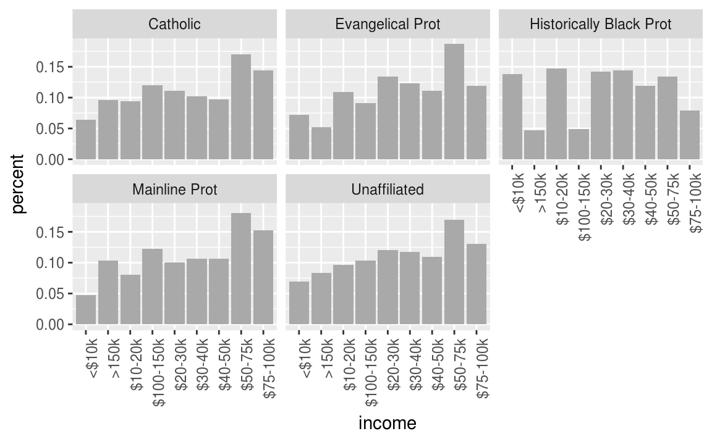
En el código de arriba utilizamos las funciones group_by, filter y mutate que estudiaremos más adelante.
Otro ejemplo,
billboard <- tbl_df(read.csv("datos/billboard.csv", stringsAsFactors = FALSE))
billboard %>% sample_n(5) %>% knitr::kable()| year | artist | track | time | date.entered | wk1 | wk2 | wk3 | wk4 | wk5 | wk6 | wk7 | wk8 | wk9 | wk10 | wk11 | wk12 | wk13 | wk14 | wk15 | wk16 | wk17 | wk18 | wk19 | wk20 | wk21 | wk22 | wk23 | wk24 | wk25 | wk26 | wk27 | wk28 | wk29 | wk30 | wk31 | wk32 | wk33 | wk34 | wk35 | wk36 | wk37 | wk38 | wk39 | wk40 | wk41 | wk42 | wk43 | wk44 | wk45 | wk46 | wk47 | wk48 | wk49 | wk50 | wk51 | wk52 | wk53 | wk54 | wk55 | wk56 | wk57 | wk58 | wk59 | wk60 | wk61 | wk62 | wk63 | wk64 | wk65 | wk66 | wk67 | wk68 | wk69 | wk70 | wk71 | wk72 | wk73 | wk74 | wk75 | wk76 |
|---|---|---|---|---|---|---|---|---|---|---|---|---|---|---|---|---|---|---|---|---|---|---|---|---|---|---|---|---|---|---|---|---|---|---|---|---|---|---|---|---|---|---|---|---|---|---|---|---|---|---|---|---|---|---|---|---|---|---|---|---|---|---|---|---|---|---|---|---|---|---|---|---|---|---|---|---|---|---|---|---|
| 2000 | Backstreet Boys, The | The One | 3:46 | 2000-05-27 | 58 | 50 | 43 | 37 | 31 | 30 | 39 | 47 | 55 | 61 | 76 | 90 | 93 | 93 | 100 | NA | NA | NA | NA | NA | NA | NA | NA | NA | NA | NA | NA | NA | NA | NA | NA | NA | NA | NA | NA | NA | NA | NA | NA | NA | NA | NA | NA | NA | NA | NA | NA | NA | NA | NA | NA | NA | NA | NA | NA | NA | NA | NA | NA | NA | NA | NA | NA | NA | NA | NA | NA | NA | NA | NA | NA | NA | NA | NA | NA | NA |
| 2000 | Sisqo | Incomplete | 3:52 | 2000-06-24 | 77 | 66 | 61 | 61 | 61 | 55 | 2 | 1 | 1 | 2 | 2 | 4 | 5 | 5 | 7 | 8 | 10 | 10 | 9 | 14 | 17 | 20 | 25 | 31 | 32 | 46 | NA | NA | NA | NA | NA | NA | NA | NA | NA | NA | NA | NA | NA | NA | NA | NA | NA | NA | NA | NA | NA | NA | NA | NA | NA | NA | NA | NA | NA | NA | NA | NA | NA | NA | NA | NA | NA | NA | NA | NA | NA | NA | NA | NA | NA | NA | NA | NA | NA | NA |
| 2000 | Madison Avenue | Don’t Call Me Baby | 3:44 | 2000-07-08 | 98 | 96 | 93 | 93 | 93 | 92 | 92 | 92 | 90 | 92 | 88 | 88 | 88 | 95 | 93 | 98 | 93 | 92 | 90 | 97 | NA | NA | NA | NA | NA | NA | NA | NA | NA | NA | NA | NA | NA | NA | NA | NA | NA | NA | NA | NA | NA | NA | NA | NA | NA | NA | NA | NA | NA | NA | NA | NA | NA | NA | NA | NA | NA | NA | NA | NA | NA | NA | NA | NA | NA | NA | NA | NA | NA | NA | NA | NA | NA | NA | NA | NA |
| 2000 | Cagle, Chris | My Love Goes On And … | 3:02 | 2000-10-21 | 99 | 94 | 94 | 87 | 84 | 83 | 76 | 76 | 79 | 83 | 91 | NA | NA | NA | NA | NA | NA | NA | NA | NA | NA | NA | NA | NA | NA | NA | NA | NA | NA | NA | NA | NA | NA | NA | NA | NA | NA | NA | NA | NA | NA | NA | NA | NA | NA | NA | NA | NA | NA | NA | NA | NA | NA | NA | NA | NA | NA | NA | NA | NA | NA | NA | NA | NA | NA | NA | NA | NA | NA | NA | NA | NA | NA | NA | NA | NA |
| 2000 | 3 Doors Down | Kryptonite | 3:53 | 2000-04-08 | 81 | 70 | 68 | 67 | 66 | 57 | 54 | 53 | 51 | 51 | 51 | 51 | 47 | 44 | 38 | 28 | 22 | 18 | 18 | 14 | 12 | 7 | 6 | 6 | 6 | 5 | 5 | 4 | 4 | 4 | 4 | 3 | 3 | 3 | 4 | 5 | 5 | 9 | 9 | 15 | 14 | 13 | 14 | 16 | 17 | 21 | 22 | 24 | 28 | 33 | 42 | 42 | 49 | NA | NA | NA | NA | NA | NA | NA | NA | NA | NA | NA | NA | NA | NA | NA | NA | NA | NA | NA | NA | NA | NA | NA |
Queremos apilar las semanas de manera que sea una sola columna (nuevamente alargamos los datos):
library(tidyr)
billboard_long <- gather(billboard, week, rank, wk1:wk76, na.rm=TRUE)
billboard_long %>% sample_n(10) %>% knitr::kable()| year | artist | track | time | date.entered | week | rank |
|---|---|---|---|---|---|---|
| 2000 | Lil’ Zane | Callin’ Me | 3:43 | 2000-07-29 | wk9 | 45 |
| 2000 | DMX | Party Up (Up In Here… | 3:45 | 2000-02-26 | wk10 | 27 |
| 2000 | Aguilera, Christina | Come On Over Baby (A… | 3:38 | 2000-08-05 | wk6 | 18 |
| 2000 | Thomas, Carl | Emotional | 4:31 | 2000-11-25 | wk15 | 63 |
| 2000 | Amber | Sexual | 4:38 | 1999-07-17 | wk17 | 98 |
| 2000 | Goo Goo Dolls | Broadway | 3:54 | 2000-04-22 | wk20 | 87 |
| 2000 | Westlife | Swear It Again | 4:07 | 2000-04-01 | wk3 | 66 |
| 2000 | Lonestar | What About Now | 3:30 | 2000-06-10 | wk1 | 78 |
| 2000 | Madonna | Music | 3:45 | 2000-08-12 | wk6 | 1 |
| 2000 | DMX | Party Up (Up In Here… | 3:45 | 2000-02-26 | wk8 | 32 |
La instrucción na.rm = TRUE se utiliza para eliminar los valores faltantes en las columnas wk1 a wk76. Realizamos una limpieza adicional creando mejores variables de fecha.
billboard_tidy <- billboard_long %>%
mutate(
week = parse_number(week),
date = as.Date(date.entered) + 7 * (week - 1)) %>%
select(-date.entered)
billboard_tidy %>% sample_n(10) %>% knitr::kable()| year | artist | track | time | week | rank | date |
|---|---|---|---|---|---|---|
| 2000 | Ginuwine | The Best Man I Can B… | 4:06 | 4 | 94 | 2000-01-29 |
| 2000 | Dion, Celine | That’s The Way It Is | 4:03 | 8 | 30 | 2000-01-01 |
| 2000 | Avant | Separated | 4:13 | 2 | 32 | 2000-05-06 |
| 2000 | Vassar, Phil | Carlene | 4:07 | 7 | 47 | 2000-04-15 |
| 2000 | Creed | With Arms Wide Open | 3:52 | 35 | 5 | 2001-01-06 |
| 2000 | Aguilera, Christina | Come On Over Baby (A… | 3:38 | 6 | 18 | 2000-09-09 |
| 2000 | Jagged Edge | Let’s Get Married | 4:23 | 14 | 14 | 2000-08-05 |
| 2000 | Walker, Clay | The Chain Of Love | 5:03 | 15 | 71 | 2000-07-22 |
| 2000 | Creed | Higher | 5:16 | 65 | 49 | 2000-12-02 |
| 2000 | Lonestar | Amazed | 4:25 | 37 | 18 | 2000-02-12 |
Nuevamente, podemos hacer gráficas fácilmente.
tracks <- billboard_tidy %>%
filter(track %in% c("Come On Over Baby (A...", "What A Girl Wants", "Say My Name", "Jumpin' Jumpin'", "Bye Bye Bye"))
ggplot(tracks, aes(x = date, y = rank)) +
geom_line() +
facet_wrap(~track, nrow = 1) +
theme(axis.text.x = element_text(angle = 90, hjust = 1))
2. Una columna asociada a más de una variable
La siguiente base de datos proviene de la Organización Mundial de la Salud y contiene el número de casos confirmados de tuberculosis por país y año, la información esta por grupo demográfico de acuerdo a sexo (m, f), y edad (0-4, 5-14, etc).
library(countrycode)
tb <- read_csv("datos/tb.csv")
tb$country_name <- countrycode(tb$iso2, 'iso2c', 'country.name')
tb %>% sample_n(5) %>% knitr::kable()| iso2 | year | new_sp_m04 | new_sp_m514 | new_sp_m014 | new_sp_m1524 | new_sp_m2534 | new_sp_m3544 | new_sp_m4554 | new_sp_m5564 | new_sp_m65 | new_sp_mu | new_sp_f04 | new_sp_f514 | new_sp_f014 | new_sp_f1524 | new_sp_f2534 | new_sp_f3544 | new_sp_f4554 | new_sp_f5564 | new_sp_f65 | new_sp_fu | country_name |
|---|---|---|---|---|---|---|---|---|---|---|---|---|---|---|---|---|---|---|---|---|---|---|
| PT | 1980 | NA | NA | NA | NA | NA | NA | NA | NA | NA | NA | NA | NA | NA | NA | NA | NA | NA | NA | NA | NA | Portugal |
| AT | 2002 | NA | NA | 1 | 8 | 14 | 32 | 43 | 20 | 25 | NA | NA | NA | 0 | 8 | 13 | 7 | 5 | 7 | 21 | NA | Austria |
| LU | 1984 | NA | NA | NA | NA | NA | NA | NA | NA | NA | NA | NA | NA | NA | NA | NA | NA | NA | NA | NA | NA | Luxembourg |
| OM | 1999 | NA | NA | 2 | 10 | 11 | 23 | 15 | 7 | 10 | NA | NA | NA | 3 | 16 | 4 | 6 | 1 | 4 | 8 | NA | Oman |
| NZ | 1985 | NA | NA | NA | NA | NA | NA | NA | NA | NA | NA | NA | NA | NA | NA | NA | NA | NA | NA | NA | NA | New Zealand |
De manera similar, utilizando la función gather() se busca apilar las columnas correspondientes a sexo-edad.
¿Cómo podemos separar la “variable” sexo-edad en dos columnas?
tb_long <- tb %>%
gather(demog, casos, new_sp_m04:new_sp_fu, na.rm=TRUE)
tb_long %>% sample_n(10) %>% knitr::kable()| iso2 | year | country_name | demog | casos |
|---|---|---|---|---|
| BZ | 2001 | Belize | new_sp_m014 | 0 |
| AN | 2004 | NA | new_sp_m3544 | 4 |
| CA | 1991 | Canada | new_sp_m4554 | 37 |
| NP | 2002 | Nepal | new_sp_f1524 | 1203 |
| RO | 2006 | Romania | new_sp_m65 | 580 |
| BH | 1995 | Bahrain | new_sp_m65 | 3 |
| PH | 1998 | Philippines | new_sp_f2534 | 109 |
| GN | 2004 | Guinea | new_sp_f65 | 63 |
| GU | 2001 | Guam | new_sp_m2534 | 4 |
| TM | 1999 | Turkmenistan | new_sp_m2534 | 225 |
Las variables sexo y edad se obtienen separando la columna demog, para esto se usa la función separate()con los siguientes argumentos: tidyr::separate(data, col = name_variabletoseparate, into = c(vector with names using ""), sep)
tb_tidy <- tb_long %>%
separate(col = demog, into = c("sex", "age"), sep = 8)
tb_tidy %>% sample_n(10) %>% knitr::kable()| iso2 | year | country_name | sex | age | casos |
|---|---|---|---|---|---|
| GN | 2004 | Guinea | new_sp_f | 2534 | 521 |
| NG | 2008 | Nigeria | new_sp_m | u | 0 |
| PY | 2006 | Paraguay | new_sp_f | 1524 | 130 |
| AT | 2007 | Austria | new_sp_f | 2534 | 14 |
| BO | 1997 | Bolivia | new_sp_m | 1524 | 1214 |
| MR | 1999 | Mauritania | new_sp_f | 3544 | 110 |
| NI | 2007 | Nicaragua | new_sp_f | 3544 | 100 |
| VU | 2005 | Vanuatu | new_sp_f | 65 | 2 |
| NG | 2005 | Nigeria | new_sp_f | 65 | 415 |
| JO | 2006 | Jordan | new_sp_m | 5564 | 4 |
Ahora para hacer mejor variable sex y age usaremos la función mutate() que permite crear nuevas variables sin modificar la dimensión del dataframe.
library(stringr)
tb_tidy <- tb_long %>%
separate(col = demog, into = c("sex", "age"), sep = 8) %>%
mutate(sex = str_sub(sex, 8, 8),
age = factor(age,
levels = c("014", "04", "1524", "2534", "3544",
"4554", "514", "5564", "65","u"),
labels = c("0-14", "0-4", "15-24", "25-34", "35-44",
"45-54", "5-14", "55-64", "65+","unknown")
)
)
tb_tidy %>% sample_n(10) %>% knitr::kable()| iso2 | year | country_name | sex | age | casos |
|---|---|---|---|---|---|
| LB | 2004 | Lebanon | m | 65+ | 6 |
| GT | 2007 | Guatemala | m | 45-54 | 203 |
| EG | 2007 | Egypt | m | 25-34 | 853 |
| BS | 2003 | Bahamas | f | 0-14 | 2 |
| ZW | 2007 | Zimbabwe | m | 65+ | 153 |
| SG | 1999 | Singapore | f | 35-44 | 18 |
| PA | 1999 | Panama | m | 25-34 | 209 |
| SL | 1998 | Sierra Leone | f | 25-34 | 294 |
| MX | 2000 | Mexico | m | 0-14 | 214 |
| UA | 1999 | Ukraine | m | 45-54 | 1825 |
Se puede separar la columna demog en dos variables, sexo y edad, utilizando la función separate. Se debe indicar la posición de donde deseamos “cortar”:
tb_tidy <- tidyr::separate(tb_long, demog, c("sex", "age"), 8)
tb_tidy %>% sample_n(10) %>% knitr::kable()| iso2 | year | country_name | sex | age | casos |
|---|---|---|---|---|---|
| KZ | 1998 | Kazakhstan | new_sp_f | 4554 | 204 |
| PL | 2001 | Poland | new_sp_m | 3544 | 603 |
| NR | 2003 | Nauru | new_sp_f | 014 | 0 |
| NC | 1996 | New Caledonia | new_sp_m | 4554 | 5 |
| BH | 2008 | Bahrain | new_sp_f | 1524 | 12 |
| LK | 1995 | Sri Lanka | new_sp_m | 2534 | 361 |
| GH | 2000 | Ghana | new_sp_f | 65 | 176 |
| ES | 2002 | Spain | new_sp_f | 014 | 17 |
| GA | 1998 | Gabon | new_sp_f | 014 | 15 |
| SE | 1999 | Sweden | new_sp_m | 3544 | 12 |
3. Variables almacenadas en filas y columnas
El problema más difícil es cuando las variables están tanto en filas como encolumnas, veamos una base de datos de clima en Cuernavaca. ¿Cuáles son las variables en estos datos?
clima <- tbl_df(read.delim("datos/clima.txt", stringsAsFactors=FALSE))
clima %>% sample_n(10) %>% knitr::kable()| id | year | month | element | d1 | d2 | d3 | d4 | d5 | d6 | d7 | d8 | d9 | d10 | d11 | d12 | d13 | d14 | d15 | d16 | d17 | d18 | d19 | d20 | d21 | d22 | d23 | d24 | d25 | d26 | d27 | d28 | d29 | d30 | d31 |
|---|---|---|---|---|---|---|---|---|---|---|---|---|---|---|---|---|---|---|---|---|---|---|---|---|---|---|---|---|---|---|---|---|---|---|
| MX000017004 | 2010 | 5 | TMIN | NA | NA | NA | NA | NA | NA | NA | NA | NA | NA | NA | NA | NA | NA | NA | NA | NA | NA | NA | NA | NA | NA | NA | NA | NA | NA | 182 | NA | NA | NA | NA |
| MX000017004 | 2010 | 4 | TMIN | NA | NA | NA | NA | NA | NA | NA | NA | NA | NA | NA | NA | NA | NA | NA | NA | NA | NA | NA | NA | NA | NA | NA | NA | NA | NA | 167 | NA | NA | NA | NA |
| MX000017004 | 2010 | 1 | TMAX | NA | NA | NA | NA | NA | NA | NA | NA | NA | NA | NA | NA | NA | NA | NA | NA | NA | NA | NA | NA | NA | NA | NA | NA | NA | NA | NA | NA | NA | 278 | NA |
| MX000017004 | 2010 | 5 | TMAX | NA | NA | NA | NA | NA | NA | NA | NA | NA | NA | NA | NA | NA | NA | NA | NA | NA | NA | NA | NA | NA | NA | NA | NA | NA | NA | 332 | NA | NA | NA | NA |
| MX000017004 | 2010 | 12 | TMAX | 299 | NA | NA | NA | NA | 278 | NA | NA | NA | NA | NA | NA | NA | NA | NA | NA | NA | NA | NA | NA | NA | NA | NA | NA | NA | NA | NA | NA | NA | NA | NA |
| MX000017004 | 2010 | 11 | TMIN | NA | 163 | NA | 120 | 79 | NA | NA | NA | NA | NA | NA | NA | NA | NA | NA | NA | NA | NA | NA | NA | NA | NA | NA | NA | NA | 121 | 142 | NA | NA | NA | NA |
| MX000017004 | 2010 | 4 | TMAX | NA | NA | NA | NA | NA | NA | NA | NA | NA | NA | NA | NA | NA | NA | NA | NA | NA | NA | NA | NA | NA | NA | NA | NA | NA | NA | 363 | NA | NA | NA | NA |
| MX000017004 | 2010 | 11 | TMAX | NA | 313 | NA | 272 | 263 | NA | NA | NA | NA | NA | NA | NA | NA | NA | NA | NA | NA | NA | NA | NA | NA | NA | NA | NA | NA | 281 | 277 | NA | NA | NA | NA |
| MX000017004 | 2010 | 6 | TMIN | NA | NA | NA | NA | NA | NA | NA | NA | NA | NA | NA | NA | NA | NA | NA | NA | 175 | NA | NA | NA | NA | NA | NA | NA | NA | NA | NA | NA | 180 | NA | NA |
| MX000017004 | 2010 | 3 | TMIN | NA | NA | NA | NA | 142 | NA | NA | NA | NA | 168 | NA | NA | NA | NA | NA | 176 | NA | NA | NA | NA | NA | NA | NA | NA | NA | NA | NA | NA | NA | NA | NA |
Estos datos tienen variables en columnas individuales (id, año, mes), en múltiples columnas (día, d1-d31) y en filas (tmin, tmax). Comencemos por apilar las columnas.
clima_long <- clima %>%
gather(day, value, d1:d31, na.rm = TRUE)
head(clima_long) %>% knitr::kable()| id | year | month | element | day | value |
|---|---|---|---|---|---|
| MX000017004 | 2010 | 12 | TMAX | d1 | 299 |
| MX000017004 | 2010 | 12 | TMIN | d1 | 138 |
| MX000017004 | 2010 | 2 | TMAX | d2 | 273 |
| MX000017004 | 2010 | 2 | TMIN | d2 | 144 |
| MX000017004 | 2010 | 11 | TMAX | d2 | 313 |
| MX000017004 | 2010 | 11 | TMIN | d2 | 163 |
Podemos crear algunas variables adicionales.
clima_vars <- clima_long %>%
mutate(day = extract_numeric(day), value = value / 10) %>%
select(id, year, month, day, element, value) %>%
arrange(id, year, month, day)
#> extract_numeric() is deprecated: please use readr::parse_number() instead
head(clima_vars) %>% knitr::kable()| id | year | month | day | element | value |
|---|---|---|---|---|---|
| MX000017004 | 2010 | 1 | 30 | TMAX | 27.8 |
| MX000017004 | 2010 | 1 | 30 | TMIN | 14.5 |
| MX000017004 | 2010 | 2 | 2 | TMAX | 27.3 |
| MX000017004 | 2010 | 2 | 2 | TMIN | 14.4 |
| MX000017004 | 2010 | 2 | 3 | TMAX | 24.1 |
| MX000017004 | 2010 | 2 | 3 | TMIN | 14.4 |
Finalmente, la columna element no es una variable, sino que almacena el nombre de dos variables, la operación que debemos aplicar (spread) es el inverso de apilar (gather):
clima_tidy <- clima_vars %>%
spread(element, value)
clima_tidy %>% sample_n(10) %>% knitr::kable()| id | year | month | day | TMAX | TMIN |
|---|---|---|---|---|---|
| MX000017004 | 2010 | 8 | 23 | 26.4 | 15.0 |
| MX000017004 | 2010 | 8 | 29 | 28.0 | 15.3 |
| MX000017004 | 2010 | 4 | 27 | 36.3 | 16.7 |
| MX000017004 | 2010 | 11 | 27 | 27.7 | 14.2 |
| MX000017004 | 2010 | 7 | 14 | 29.9 | 16.5 |
| MX000017004 | 2010 | 10 | 28 | 31.2 | 15.0 |
| MX000017004 | 2010 | 6 | 17 | 28.0 | 17.5 |
| MX000017004 | 2010 | 3 | 5 | 32.1 | 14.2 |
| MX000017004 | 2010 | 8 | 13 | 29.8 | 16.5 |
| MX000017004 | 2010 | 2 | 2 | 27.3 | 14.4 |
Ahora es inmediato no solo hacer gráficas sino también ajustar un modelo.
# ajustamos un modelo lineal donde la variable respuesta es temperatura
# máxima, y la variable explicativa es el mes
clima_lm <- lm(TMAX ~ factor(month), data = clima_tidy)
summary(clima_lm)
#>
#> Call:
#> lm(formula = TMAX ~ factor(month), data = clima_tidy)
#>
#> Residuals:
#> Min 1Q Median 3Q Max
#> -3.65 -0.92 -0.02 1.05 3.18
#>
#> Coefficients:
#> Estimate Std. Error t value Pr(>|t|)
#> (Intercept) 27.800 1.861 14.94 5.3e-13 ***
#> factor(month)2 -0.050 2.081 -0.02 0.9810
#> factor(month)3 4.767 2.149 2.22 0.0372 *
#> factor(month)4 8.500 2.632 3.23 0.0039 **
#> factor(month)5 5.400 2.632 2.05 0.0523 .
#> factor(month)6 1.250 2.279 0.55 0.5889
#> factor(month)7 1.450 2.279 0.64 0.5312
#> factor(month)8 0.471 1.990 0.24 0.8149
#> factor(month)10 1.100 2.039 0.54 0.5949
#> factor(month)11 0.320 2.039 0.16 0.8767
#> factor(month)12 1.050 2.279 0.46 0.6496
#> ---
#> Signif. codes: 0 '***' 0.001 '**' 0.01 '*' 0.05 '.' 0.1 ' ' 1
#>
#> Residual standard error: 1.86 on 22 degrees of freedom
#> Multiple R-squared: 0.618, Adjusted R-squared: 0.445
#> F-statistic: 3.56 on 10 and 22 DF, p-value: 0.00624. Mas de un tipo de observación en una misma tabla
En ocasiones las bases de datos involucran valores en diferentes niveles, endiferentes tipos de unidad observacional. En la limpieza de datos, cada unidad observacional debe estar almacenada en su propia tabla (esto esta ligado a normalización de una base de datos), es importante para evitar inconsistencias en los datos.
¿Cuáles son las unidades observacionales de los datos de billboard?
billboard_tidy %>% arrange(artist, track, year, time) %>% head(20)
#> # A tibble: 20 x 7
#> year artist track time week rank date
#> <int> <chr> <chr> <chr> <dbl> <int> <date>
#> 1 2000 2 Pac Baby Don't Cry (Keep... 4:22 1.00 87 2000-02-26
#> 2 2000 2 Pac Baby Don't Cry (Keep... 4:22 2.00 82 2000-03-04
#> 3 2000 2 Pac Baby Don't Cry (Keep... 4:22 3.00 72 2000-03-11
#> 4 2000 2 Pac Baby Don't Cry (Keep... 4:22 4.00 77 2000-03-18
#> 5 2000 2 Pac Baby Don't Cry (Keep... 4:22 5.00 87 2000-03-25
#> 6 2000 2 Pac Baby Don't Cry (Keep... 4:22 6.00 94 2000-04-01
#> # ... with 14 more rowsSeparemos esta base de datos en dos: la tabla canción que almacena artista, nombre de la canción y duración; la tabla rank que almacena el ranking de la canción en cada semana.
song <- billboard_tidy %>%
select(artist, track, year, time) %>%
unique() %>%
arrange(artist) %>%
mutate(song_id = row_number(artist))
song %>% sample_n(10) %>% knitr::kable()| artist | track | year | time | song_id |
|---|---|---|---|---|
| Zombie Nation | Kernkraft 400 | 2000 | 3:30 | 316 |
| Brooks, Garth | Do What You Gotta Do | 2000 | 2:56 | 48 |
| Larrieux, Amel | Get Up | 2000 | 4:02 | 167 |
| Sisqo | Thong Song | 2000 | 4:05 | 265 |
| Next | Wifey | 2000 | 4:03 | 224 |
| Diffie, Joe | The Quittin’ Kind | 2000 | 3:23 | 79 |
| Lil Wayne | Tha Block Is Hot | 2000 | 4:13 | 172 |
| SheDaisy | This Woman Needs | 2000 | 3:20 | 258 |
| Aaliyah | Try Again | 2000 | 4:03 | 9 |
| Jay-Z | Big Pimpin’ | 2000 | 3:55 | 145 |
rank <- billboard_tidy %>%
left_join(song, c("artist", "track", "year", "time")) %>%
select(song_id, date, week, rank) %>%
arrange(song_id, date) %>%
tbl_df
rank %>% sample_n(10) %>% knitr::kable()| song_id | date | week | rank |
|---|---|---|---|
| 253 | 2000-07-15 | 23 | 26 |
| 255 | 2000-03-11 | 21 | 4 |
| 126 | 2000-04-08 | 8 | 77 |
| 65 | 2000-09-23 | 1 | 97 |
| 131 | 1999-10-30 | 4 | 43 |
| 214 | 2000-10-28 | 8 | 10 |
| 156 | 2000-09-16 | 7 | 36 |
| 211 | 2000-12-02 | 13 | 45 |
| 157 | 2000-08-19 | 3 | 75 |
| 264 | 2000-07-01 | 2 | 66 |
5. Una misma unidad observacional está almacenada en múltiples tablas
También es común que los valores sobre una misma unidad observacional estén separados en muchas tablas o archivos, es común que estas tablas esten divididas de acuerdo a una variable, de tal manera que cada archivo representa a una persona, año o ubicación. Para juntar los archivos hacemos lo siguiente:
Leemos los archivos en una lista de tablas.
Para cada tabla agregamos una columna que registra el nombre del archivo original.
Combinamos las tablas en un solo data frame.
Veamos un ejemplo, la carpeta specdata contiene 332 archivos csv que almacenan información de monitoreo de contaminación en 332 ubicaciones de EUA. Cada archivo contiene información de una unidad de monitoreo y el número de identificación del monitor es el nombre del archivo.
Los pasos en R (usando el paquete plyr), primero creamos un vector con los nombres de los archivos en un directorio, aligiendo aquellos que contengan las letras “.csv”.
paths <- dir("datos/specdata", pattern = "\\.csv$", full.names = TRUE)Después le asignamos el nombre del csv al nombre de cada elemento del vector. Este paso se realiza para preservar los nmobres de los archivos ya que estos los asignaremos a una variable mas adelante.
names(paths) <- basename(paths)La función map_df del paquete purrr itera sobre cada dirección, lee el csv en dicha dirección y los combina en un data frame.
specdata_US <- map_df(paths, read.csv, stringsAsFactors = FALSE)
specdata <- specdata_US %>%
mutate(monitor = extract_numeric(ID), date = as.Date(Date)) %>%
select(id = ID, monitor, date, sulfate, nitrate)
glimpse(specdata)
#> Observations: 772,087
#> Variables: 5
#> $ id <int> 1, 1, 1, 1, 1, 1, 1, 1, 1, 1, 1, 1, 1, 1, 1, 1, 1, 1, ...
#> $ monitor <dbl> 1, 1, 1, 1, 1, 1, 1, 1, 1, 1, 1, 1, 1, 1, 1, 1, 1, 1, ...
#> $ date <date> 2003-01-01, 2003-01-02, 2003-01-03, 2003-01-04, 2003-...
#> $ sulfate <dbl> NA, NA, NA, NA, NA, NA, NA, NA, NA, NA, NA, NA, NA, NA...
#> $ nitrate <dbl> NA, NA, NA, NA, NA, NA, NA, NA, NA, NA, NA, NA, NA, NA...6. Otras consideraciones
En las buenas prácticas es importante tomar en cuenta los siguientes puntos:
Incluir un encabezado con el nombre de las variables.
Los nombres de las variables deben ser entendibles (e.g. age_at_diagnosis es mejor que AgeDx).
En general los datos se deben guardar en un archivo por tabla.
Escribir un script con las modificaciones que se hicieron a los datos crudos (reproducibilidad).
Otros aspectos importantes en la limpieza de datos son: selección del tipo de variables (por ejemplo fechas), datos faltantes, typos y detección de valores atípicos.
3.3 Separa-aplica-combina
Muchos problemas de análisis de datos involucran la aplicación de la estrategia split-apply-combine de Hadley Whickam, 2011. Esto se traduce en realizar filtros, cálculos y agregación de datos.
Split-apply-combine
Separa la base de datos original.
Aplica funciones a cada subconjunto.
Combina los resultados en una nueva base de datos.

Cuando pensamos como implementar la estrategia divide-aplica-combina es natural pensar en iteraciones para recorrer cada grupo de interés y aplicar las funciones.
dplyr que contiene funciones que facilitan la implementación de la estrategia.
Son importantes las siguientes funciones de la librería dplyr:
filter: obtiene un subconjunto de las filas de acuerdo a una condición.
select: selecciona columnas de acuerdo al nombre.
arrange: re ordena las filas.
mutate: agrega nuevas variables.
summarise: reduce variables a valores (crear nuevas bases de datos).
Para mostrar las funciones se usará el siguiente dataframe.
df_ej <- data.frame(genero = c("mujer", "hombre", "mujer", "mujer", "hombre"),
estatura = c(1.65, 1.80, 1.70, 1.60, 1.67))
df_ej %>% knitr::kable()| genero | estatura |
|---|---|
| mujer | 1.65 |
| hombre | 1.80 |
| mujer | 1.70 |
| mujer | 1.60 |
| hombre | 1.67 |
Filtrar
Filtrar una base de datos dependiendo de una condición requiere la función filter() que tiene los siguientes argumentos dplyr::filter(data, condition).
df_ej %>% filter(genero == "mujer")
#> genero estatura
#> 1 mujer 1.65
#> 2 mujer 1.70
#> 3 mujer 1.60Seleccionar
Elegir columnas de un conjunto de datos se puede hacer con la función select() que tiene los siguientes argumentos dplyr::select(data, seq_variables).
df_ej %>% select(genero)
#> genero
#> 1 mujer
#> 2 hombre
#> 3 mujer
#> 4 mujer
#> 5 hombreTambién, existen funciones que se usan exclusivamente en select():
starts_with(x, ignore.case = TRUE): los nombres empiezan con x.ends_with(x, ignore.case = TRUE): los nombres terminan con x.contains(x, ignore.case = TRUE): selecciona las variable que contengan x.matches(x, ignore.case = TRUE): selecciona las variable que igualen la expresión regular x.num_range("x", 1:5, width = 2): selecciona las variables (numéricamente) de x01 a x05.one_of("x", "y", "z"): selecciona las variables que estén en un vector de caracteres.everything(): selecciona todas las variables.
Por ejemplo:
df_ej %>% select(starts_with("g"))
#> genero
#> 1 mujer
#> 2 hombre
#> 3 mujer
#> 4 mujer
#> 5 hombreArreglar
Arreglar u ordenar de acuerdo al valor de una o más variables es posible con la función arrange() que tiene los siguientes argumentos dplyr::arrange(data, variables_por_las_que_ordenar). La función desc() permite que se ordene de forma descendiente.
df_ej %>% arrange(desc(estatura))
#> genero estatura
#> 1 hombre 1.80
#> 2 mujer 1.70
#> 3 hombre 1.67
#> 4 mujer 1.65
#> 5 mujer 1.60Mutar
Mutar consiste en crear nuevas variables con la función mutate() que tiene los siguientes argumentos dplyr::mutate(data, nuevas_variables = operaciones):
df_ej %>% mutate(estatura_cm = estatura * 100)
#> genero estatura estatura_cm
#> 1 mujer 1.65 165
#> 2 hombre 1.80 180
#> 3 mujer 1.70 170
#> 4 mujer 1.60 160
#> 5 hombre 1.67 167Resumir
Los resúmenes permiten crear nuevas bases de datos que son agregaciones de los datos originales.
La función summarise() permite realizar este resumendplyr::summarise(data, nuevas_variables = operaciones):
df_ej %>% dplyr::summarise(promedio = mean(estatura))
#> promedio
#> 1 1.68También es posible hacer resúmenes agrupando por variables determinadas de la base de datos. Pero, primero es necesario crear una base agrupada con la función group_by() con argumentos dplyr::group_by(data, add = variables_por_agrupar):
df_ej %>%
group_by(genero)
#> # A tibble: 5 x 2
#> # Groups: genero [2]
#> genero estatura
#> <fct> <dbl>
#> 1 mujer 1.65
#> 2 hombre 1.80
#> 3 mujer 1.70
#> 4 mujer 1.60
#> 5 hombre 1.67Después se opera sobre cada grupo, creando un resumen a nivel grupo y uniendo los subconjuntos en una base nueva:
df_ej %>%
group_by(genero) %>%
dplyr::summarise(promedio = mean(estatura))
#> # A tibble: 2 x 2
#> genero promedio
#> <fct> <dbl>
#> 1 hombre 1.74
#> 2 mujer 1.653.4 Muertes por armas de fuego en EUA
Los datos que vamos a utilizar provienen principalmente de la base de datos de causas múltiples de la muerte de los Centros para el Control y Prevención de la Enfermedad (CDCs) de Estados Unidos, de certificados de defunción de los 50 estados. Se considera que esta fuente de información es la base de datos más completa de muertes por armas de fuego.
Para más información puedes leer el artículo: https://fivethirtyeight.com/features/gun-deaths/
Comencemos leyendo los datos para los años 2012, 2013 y 2014:
guns_12 <- read_csv("datos/guns_12.csv", na = "")
guns_13 <- read_csv("datos/guns_13.csv", na = "")
guns_14 <- read_csv("datos/guns_14.csv", na = "")Las tres tablas tienen las mismas variables en el mismo orden. Examinemos la tabla para el año 2012:
glimpse(guns_12)
#> Observations: 33,096
#> Variables: 40
#> $ res_status <int> 1, 3, 1, 1, 1, 1, 2, 1, 1, 1, 1, 1, 1, 1, 1, ...
#> $ education_89 <chr> "16", "13", "16", "17", "12", "10", "12", "12...
#> $ education_03 <chr> "NA", "NA", "NA", "NA", "NA", "NA", "NA", "NA...
#> $ education_flag <int> 0, 0, 0, 0, 0, 0, 0, 0, 0, 0, 0, 0, 0, 0, 0, ...
#> $ month <chr> "01", "01", "01", "02", "02", "02", "02", "03...
#> $ sex <chr> "M", "F", "M", "M", "M", "M", "M", "M", "M", ...
#> $ detail_age <int> 1034, 1021, 1060, 1064, 1031, 1017, 1048, 104...
#> $ age_flag <chr> "NA", "NA", "NA", "NA", "NA", "NA", "NA", "NA...
#> $ age_recode <int> 32, 30, 38, 38, 32, 29, 35, 34, 36, 32, 30, 3...
#> $ age_recode2 <chr> "12", "10", "18", "18", "12", "09", "15", "14...
#> $ age_group <chr> "05", "04", "08", "08", "05", "04", "07", "06...
#> $ age_infant <chr> "NA", "NA", "NA", "NA", "NA", "NA", "NA", "NA...
#> $ death_place <int> 4, 7, 7, 4, 7, 4, 1, 7, 7, 4, 4, 4, 2, 4, 4, ...
#> $ marital <chr> "S", "S", "M", "S", "U", "S", "W", "M", "M", ...
#> $ day_of_week <int> 6, 4, 7, 7, 1, 7, 5, 1, 7, 5, 1, 5, 4, 4, 5, ...
#> $ data_year <int> 2012, 2012, 2012, 2012, 2012, 2012, 2012, 201...
#> $ at_work <chr> "N", "N", "N", "N", "N", "N", "N", "N", "N", ...
#> $ death_manner <chr> "2", "2", "2", "2", "2", "2", "5", "2", "1", ...
#> $ burial <chr> "U", "U", "U", "U", "U", "U", "U", "U", "U", ...
#> $ autopsy <chr> "N", "N", "N", "N", "Y", "N", "N", "N", "N", ...
#> $ activity <int> 9, 9, 9, 9, 9, 9, 9, 9, 9, 9, 9, 9, 9, 9, 9, ...
#> $ injury_place <int> 0, 4, 8, 0, 8, 0, 0, 0, 8, 0, 0, 0, 0, 0, 0, ...
#> $ underlying_cause <chr> "X74", "X74", "X72", "X74", "X72", "X73", "Y2...
#> $ cause_recode358 <int> 429, 429, 429, 429, 429, 429, 446, 429, 407, ...
#> $ cause_recode113 <int> 125, 125, 125, 125, 125, 125, 132, 125, 119, ...
#> $ cause_recode130 <chr> "NA", "NA", "NA", "NA", "NA", "NA", "NA", "NA...
#> $ cause_recode39 <int> 40, 40, 40, 40, 40, 40, 42, 40, 39, 40, 40, 4...
#> $ race <chr> "68", "01", "01", "01", "01", "03", "01", "03...
#> $ race_bridged <chr> "NA", "NA", "NA", "NA", "NA", "NA", "NA", "NA...
#> $ race_flag <chr> "NA", "NA", "NA", "NA", "NA", "NA", "NA", "NA...
#> $ race_recode <int> 2, 1, 1, 1, 1, 2, 1, 2, 1, 1, 2, 1, 2, 1, 2, ...
#> $ race_recode2 <int> 4, 1, 1, 1, 1, 3, 1, 3, 1, 1, 3, 1, 3, 1, 3, ...
#> $ hispanic <int> 100, 100, 100, 100, 100, 100, 100, 100, 100, ...
#> $ hispanic_recode <int> 8, 6, 6, 6, 6, 8, 6, 8, 6, 6, 8, 6, 8, 6, 8, ...
#> $ intent <chr> "Suicide", "Suicide", "Suicide", "Suicide", "...
#> $ police <int> 0, 0, 0, 0, 0, 0, 0, 0, 0, 0, 0, 0, 0, 0, 0, ...
#> $ weapon <chr> "Other/unknown", "Other/unknown", "Handgun", ...
#> $ year <int> 2012, 2012, 2012, 2012, 2012, 2012, 2012, 201...
#> $ age <int> 34, 21, 60, 64, 31, 17, 48, 41, 50, 30, 21, 4...
#> $ place <chr> "Home", "Street", "Other specified", "Home", ...Para pegar las tablas para los 3 años vamos a utilizar la función bind_rows() del paquete dplyr:
guns <- guns_12 %>%
bind_rows(guns_13) %>%
bind_rows(guns_14)Veamos otro ejemplo de cómo recodificar variables categóricas, en este caso para la variable de nivel educativo:
guns <- guns %>%
mutate(education = ifelse(education_flag == 1,
cut(as.numeric(education_03), breaks = c(0, 2, 3, 5, 8, 9, labels = c("Less than HS", "HS/GED", "Some college", "BA+", NA))),
cut(as.numeric(education_89), breaks = c(0, 11, 12, 15, 17, 99), labels = c("Less than HS", "HS/GED", "Some college", "BA+", NA))))Otro ejemplo, para la variable de raza:
guns <- guns %>%
mutate(race = as.integer(race),
race = ifelse(hispanic > 199 & hispanic <996, "Hispanic",
ifelse(race == "01", "White",
ifelse(race == "02", "Black",
ifelse(as.numeric(race) >= 4 & as.numeric(race) <= 78, "Asian/Pacific Islander","Native American/Native Alaskan")))),
race = ifelse(is.na(race), "Unknown", race))Para quedarnos con las variables con las que vamos a trabajar utilizamos la función select():
guns <- guns %>%
select(year, month, intent, police, sex, age, race, hispanic, place, education)Veamos de nuevo cómo es la estructura de la tabla:
str(guns)
#> Classes 'tbl_df', 'tbl' and 'data.frame': 99396 obs. of 10 variables:
#> $ year : int 2012 2012 2012 2012 2012 2012 2012 2012 2012 2012 ...
#> $ month : chr "01" "01" "01" "02" ...
#> $ intent : chr "Suicide" "Suicide" "Suicide" "Suicide" ...
#> $ police : int 0 0 0 0 0 0 0 0 0 0 ...
#> $ sex : chr "M" "F" "M" "M" ...
#> $ age : int 34 21 60 64 31 17 48 41 50 30 ...
#> $ race : chr "Asian/Pacific Islander" "Native American/Native Alaskan" "Native American/Native Alaskan" "Native American/Native Alaskan" ...
#> $ hispanic : int 100 100 100 100 100 100 100 100 100 100 ...
#> $ place : chr "Home" "Street" "Other specified" "Home" ...
#> $ education: int 4 3 4 4 2 1 2 2 3 3 ...Supongamos que nos interesa analizar el número de suicidios por arma de fuego para cada uno de los tres años. Esto quiere decir que es necesario agrupar y usar una función de resumen:
guns %>%
filter(intent == "Suicide") %>%
group_by(year) %>%
summarize(suicides = n())
#> # A tibble: 3 x 2
#> year suicides
#> <int> <int>
#> 1 2012 20663
#> 2 2013 21172
#> 3 2014 21333Supongamos que deseamos filtar (quitar las observaciones) de homicidios para los cuales se tiene la categoría de “Other”, para ello utilizamos la función filter():
guns_sin_especificar <- guns %>%
filter(place != "Other unspecified" & place != "Other specified")Podemos analizar la siguiente gráfica de mosaico:
ggplot(guns_sin_especificar, aes(x=as.factor(place), fill=as.factor(intent))) +
geom_bar(position='fill') +
coord_flip() +
theme(aspect.ratio = 1,legend.position="bottom",
axis.text.y=element_text(color='black',size=10),
axis.text.x=element_text(color='black',size=10),
axis.title.x=element_text(size=10),
axis.title.y=element_text(size=10),
legend.text=element_text(size=10)) +
scale_fill_discrete("") +
ylab('Proporción') + xlab("Lugar") +
ggtitle("Lugar de homicidios por intención")
Se podría concluir, por ejemplo, que si un homicidio ocurrió en una granja, entonces lo más probable es que haya sido un suicidio.
3.5 El Cuarteto de Anscombe
“The simple graph has brought more information to the data analyst’s mind than any other device.” — John Tukey
En 1971 un estadístico llamado Frank Anscombe (fundador del departamento de Estadística de la Universidad de Yale) encontró cuatro conjuntos de datos (I, II, III y IV). Cada uno consiste de 11 observaciones y tienen las mismas propiedades estadísticas.
anscombe| \(x_1\) | \(y_1\) | \(x_2\) | \(y_2\) | \(x_3\) | \(y_3\) | \(x_4\) | \(y_4\) |
|---|---|---|---|---|---|---|---|
10.0 |
8.04 |
10.0 |
9.14 |
10.0 |
7.46 |
8.0 |
6.58 |
8.0 |
6.95 |
8.0 |
8.14 |
8.0 |
6.77 |
8.0 |
5.76 |
13.0 |
7.58 |
13.0 |
8.74 |
13.0 |
12.74 |
8.0 |
7.71 |
9.0 |
8.81 |
9.0 |
8.77 |
9.0 |
7.11 |
8.0 |
8.84 |
11.0 |
8.33 |
11.0 |
9.26 |
11.0 |
7.81 |
8.0 |
8.47 |
14.0 |
9.96 |
14.0 |
8.10 |
14.0 |
8.84 |
8.0 |
7.04 |
6.0 |
7.24 |
6.0 |
6.13 |
6.0 |
6.08 |
8.0 |
5.25 |
4.0 |
4.26 |
4.0 |
3.10 |
4.0 |
5.39 |
19.0 |
12.50 |
12.0 |
10.84 |
12.0 |
9.13 |
12.0 |
8.15 |
8.0 |
5.56 |
7.0 |
4.82 |
7.0 |
7.26 |
7.0 |
6.42 |
8.0 |
7.91 |
5.0 |
5.68 |
5.0 |
4.74 |
5.0 |
5.73 |
8.0 |
6.89 |
Por ejemplo, todos los conjuntos de datos I, II, III, y IV, tienen exactamente misma media de \(x\), \(\bar{x}_i = \bar{x}_j\), y misma media de \(y\), \(\bar{y}_i = \bar{y}_j\) para toda \(i,j=1,2,3,4\). Además, se puede ver que todos tienen misma varianza muestral de \(x\) y de \(y\). En cada conjunto de datos la correlación entre \(x\) y \(y\) es la misma, y por consiguiente, los coeficientes de la regresión lineal \(\beta_0\) y \(\beta_1\) también son iguales.
| Propiedad | Valor |
|---|---|
Media de \(x\) |
9 |
Varianza muestral de \(x\) |
11 |
Media de \(y\) |
7.50 |
Varianza muestral de \(y\) |
4.12 |
Correlación entre \(x\) y \(y\) |
0.816 |
Línea de regresión lineal |
\(y = 3.00 + 0.500x\) |
¿En qué son diferentes estos conjuntos de datos? ¿Es posible con la información anterior concluir que los cuatro conjuntos de datos deben ser similares? ¿Que tengan estadísticas similares asegura que provienen de un mismo modelo?
Cuando analizamos los datos de manera gráfica en un histograma encontramos rápidamente que los conjuntos de datos son muy distintos.

En la gráfica del primer conjunto de datos, se ven datos como los que se tendrían en una relación lineal simple con un modelo que cumple los supuestos de normalidad. La segunda gráfica (la de arriba a la derecha) muestra unos datos que tienen una asociación pero definitivamente no es lineal y el coeficiente de correlación no es relevante en este caso. En la tercera gráfica (abajo a la izquierda) están puntos alineados perfectamente en una línea recta, excepto por uno de ellos. En la última gráfica podemos ver un ejemplo en el cual basta tener una observación atípica para que se produzca un coeficiente de correlación alto aún cuando en realidad no existe una asociación lineal entre las dos variables.
Edward Tufte usó el cuarteto en la primera página del primer capítulo de su libro The Visual Display of Quantitative Information, para enfatizar la importancia de mirar los datos antes de analizarlos. (Tufte and Graves-Morris 2014)
3.6 The Grammar of Graphics de Leland Wilkinson
Una ventaje de ggplot es que implementa una gramática de gráficas de forma organizada y con sentido orientada a esta forma de asociar variables con geometrías (Wilkinson 2005). En lugar de tener una lista enorme y conceptualmente plana de opciones para hacer gráficas, ggplot parte en varios pasos el procedimiento para realizar una gráfica:
primero, se debe proporcionar información a la función sobre qué datos y qué variables se van a utilizar.
segundo, se debe vincular las variables que se van a utilizar en la gráfica con las características específicas que se requiere tener en la gráfica.
tercero, se debe elegir una función
geom_para indicar qué tipo de gráfica se dibujará, un diagrama de dispersión, una gráfica de barras o un diagrama de caja.
En general, según Leland Wilkinson, hay dos principios generales que se deben seguir:
La geometría utilizada debe coincidir con los datos que se están visualizando.
La geometría utilizada debe ser fácil de interpretar.
3.7 ggplot
Vamos a ver cómo visualizar los datos usando ggplot2. R tiene varios sistemas para hacer gráficas, pero ggplot2 es uno de los más elegantes y versátiles. ggplot2 implementa la gramática de gráficas, un sistema consistente para describir y construir gráficas. Con ggplot2, pueden hacerse cosas más rápido, aprendiendo un único sistema consistente, y aplicándolo de muchas formas.
Para mayor información sobre los fundamentos teóricos de ggplot2 se recomienda leer el artículo titulado “The Layered Grammar of Graphics”, visitando la siguiente liga: http://vita.had.co.nz/papers/layered-grammar.pdf.
Lo más importante para entender ggplot es comprender la estructura y la lógica para hacer una gráfica. El código debe decir cuáles son las conexiones entre las variables en los datos y los elementos de la gráfica tal como los vamos a ver en la pantalla, los puntos, los colores y las formas. En ggplot, estas conexiones lógicas entre los datos y los elementos de la gráfica se denominan asignaciones estéticas o simplemente estéticas. Se comienza una gráfica indicando a ggplot cuáles son los datos, qué variables en los datos se van a usar y luego cómo las variables en estos datos se mapean lógicamente en la estética de la gráfica. Luego, toma el resultado y se indica qué tipo de gráfica se desea, por ejemplo, un diagrama de dispersión, una gráfica de barras, o una gráfica de línea. En ggplot este tipo general de gráficas se llama geom. Cada geom tiene una función que lo crea. Por ejemplo, geom_point() hace diagramas de dispersión, geom_bar() hace gráficas de barras, geom_line() hace gráficas de línea, y así sucesivamente. Para combinar estas dos piezas, el objeto ggplot() y el geom se suman literalmente en una expresión, utilizando el símbolo “+”.
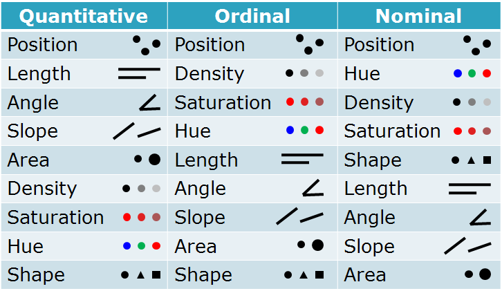
Usaremos los datos de gapminder para hacer nuestras primeras gráficas. Vamos a asegurarnos de que la biblioteca que contiene los datos esté cargada:
library(gapminder)Esto hace que una tabla de datos esté disponible para su uso. Para ver un pedazo de la tabla utilizamos la función glimpse():
library(tidyverse)
glimpse(gapminder)
#> Observations: 1,704
#> Variables: 6
#> $ country <fct> Afghanistan, Afghanistan, Afghanistan, Afghanistan, ...
#> $ continent <fct> Asia, Asia, Asia, Asia, Asia, Asia, Asia, Asia, Asia...
#> $ year <int> 1952, 1957, 1962, 1967, 1972, 1977, 1982, 1987, 1992...
#> $ lifeExp <dbl> 28.8, 30.3, 32.0, 34.0, 36.1, 38.4, 39.9, 40.8, 41.7...
#> $ pop <int> 8425333, 9240934, 10267083, 11537966, 13079460, 1488...
#> $ gdpPercap <dbl> 779, 821, 853, 836, 740, 786, 978, 852, 649, 635, 72...Supongamos que queremos graficar la esperanza de vida vs el PIB per cápita para todos los años y países en los datos. Haremos esto creando un objeto que contenga parte de la información necesario y a partir de ahí vamos a construir nuestra gráfica. Primero debemos indicarle a la función ggplot() qué datos estamos utilizando:
p <- ggplot(data = gapminder)
pEn este punto, ggplot sabe cuáles son nuestros datos, pero no cuál es el mapeo, es decir, qué variables de los datos deben correlacionarse con qué elementos visuales de la trama. Tampoco sabe qué tipo de trama queremos. En ggplot, las asignaciones se especifican utilizando la función aes(). Me gusta esta:
Hasta este punto ggplot conoce qué datos se van a utilizar para hacer la gráfico, pero no el mapeo o asociación de qué variables se van a relacionar con los elementos visuales de la gráfica. Tampoco se sabe qué tipo de gráfica se va a hacer. En ggplot, las asignaciones se especifican utilizando la función aes():
p <- ggplot(data = gapminder,
mapping = aes(x = gdpPercap,
y = lifeExp))El argumento mapping = aes(...) vincula variables a cosas que se van a ver en la gráfica. Los valores de \(x\) y \(y\) son los más obvios. Otras asignaciones estéticas pueden incluir, por ejemplo, el color, la forma, el tamaño y el tipo de línea (si una línea es sólida o discontinua, o algún otro patrón). Un mapeo no dice directamente qué formas o colores van a aparecer en la gráfica. Más bien, dicen qué variables en los datos serán representadas por los elementos visuales como color, forma o un punto.
¿Qué sucede si simplemente escribimos p en la consola y ejecutamos?
p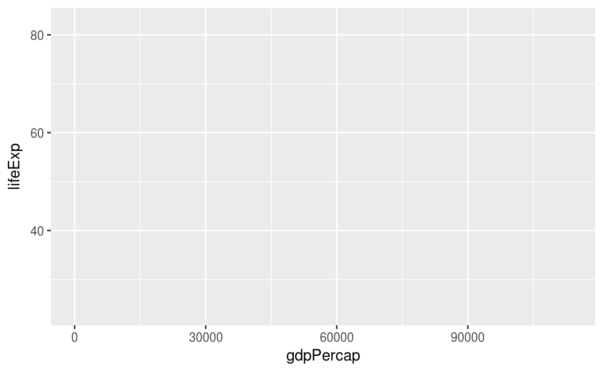
El objeto p ha sido creado por la función ggplot(), y ya tiene información sobre las asignaciones que queremos, junto con mucha otra información añadida por defecto. (Si quiere ver cuánta información hay en el objeto p, intente solicitar str(p)). Sin embargo, no le hemos dado ninguna instrucción acerca de qué tipo de diagrama dibujar. Necesitamos agregar una capa a la trama. Esto significa elegir una función geom_*. Usaremos geom_point(). Sabe cómo tomar valores xey y trazarlos en un diagrama de dispersión.
Se ha creado el objeto p utilizando la función ggplot() y este objeto ya tiene información de las asignacionesque queremos. Sin embargo, no se le ha dado ninguna instrucción sobre qué tipo de gráfica se quiere dibujar. Necesitamos agregar una capa a la gráfica. Esto se hace mediante el símbolo +. Esto significa elegir una función geom_. Utilizaremos geom_point() para hacer un diagrama de dispersión.
p + geom_point()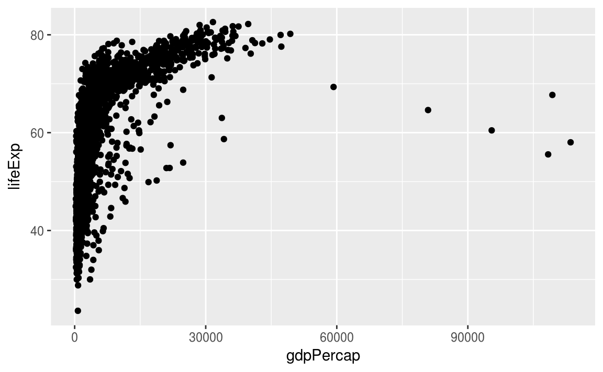
El mapeo de las propiedades estéticas se denomina escalamiento y depende del tipo de variable, las variables discretas (por ejemplo, genero, escolaridad, país) se mapean a distintas escalas que las variables continuas (variables numéricas como edad, estatura, etc.), los defaults para algunos atributos son (estos se pueden modificar):
| aes | Discreta | Continua |
|---|---|---|
Color (color) |
Arcoiris de colores | Gradiente de colores |
Tamaño (size) |
Escala discreta de tamaños | Mapeo lineal entre el área y el valor |
Forma (shape) |
Distintas formas | No aplica |
Transparencia (alpha) |
No aplica | Mapeo lineal a la transparencia |
Los geoms controlan el tipo de gráfica:
p + geom_smooth()
Podemos ver de inmediato que algunos de estos geoms hacen mucho más que simplemente poner puntos en una cuadrícula. Aquí geom_smooth() ha calculado una línea suavizada y la región sombreada representa el error estándar de la línea suavizada. Si queremos ver los puntos de datos y la línea juntos, simplemente agregamos geom_point() de nuevo como una capa adicional utilizando +:
p <- ggplot(data = gapminder,
mapping = aes(x = gdpPercap,
y=lifeExp))
p + geom_point() + geom_smooth()
El mensaje de la consola de R nos dice que la función geom_smooth() está utilizando un método llamado gam, que en este caso significa que se ajusta a un modelo aditivo generalizado. Esto sugiere que tal vez haya otros métodos en geom_smooth(). Podemos intentar agregar method = "lm" (para “modelo lineal”) como un argumento para geom_smooth():
p <- ggplot(data = gapminder,
mapping = aes(x = gdpPercap,
y=lifeExp))
p + geom_point() + geom_smooth(method="lm")
Se puede agregar al mapeo del color de la línea el continente y del relleno de los puntos (fill) también el continente para obtener una gráfica que nos dé una idea más general de como se tiene esta relación por continente.
p <- ggplot(data = gapminder,
mapping = aes(x = gdpPercap,
y = lifeExp,
color = continent,
fill = continent))
p + geom_point(size = 0.5) +
geom_smooth(method='loess') +
scale_x_log10()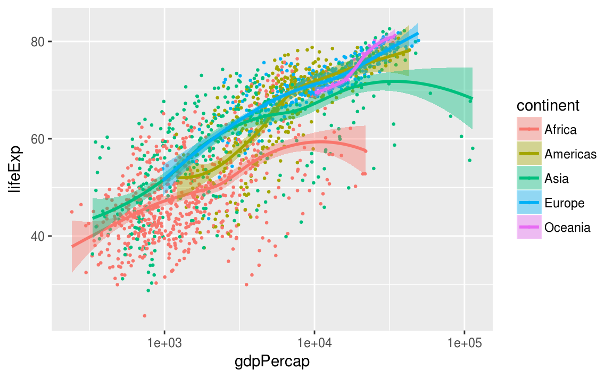
3.8 Un histograma de las muertes en Iraq
Iraq Body Count (IBC) mantiene la base de datos pública más grande sobre muertes violentas de civiles desde la invasión en Iraq del 2003. Los datos de IBC provienen de informes de medios cruzados, de hospitales, morgue, ONG y cifras o registros oficiales.
Para mayor información puedes visitar https://www.iraqbodycount.org/.
Los datos los leemos con la función read_csv() de la librería readr:
ibc <- read_csv("datos/ibc-incidents-2016-8-8.csv")
ibc %>% sample_n(10) %>%
knitr::kable("html") %>%
kableExtra::kable_styling(font_size = 10)| IBC_code | Start_Date | End_Date | Time | Location | Target | Weapons | Deaths_recorded | Sources |
|---|---|---|---|---|---|---|---|---|
| m2046 | 2-Sep-13 | 2-Sep-13 | PM | 13 Street, Al-Bayaa, southwest Baghdad | employee at the Ministry of Education in front of his home | gunfire | 1 | AIN 2 Sep, Sotaliraq 2 Sep |
| d2329 | 9-Feb-07 | 9-Feb-07 | NA | near Al-Shimal Garage, Mosul | NA | explosive device | 1 | MO 09 Feb, WP 04 Apr (MoH) |
| k7919 | 29-Oct-07 | 29-Oct-07 | 8:00-9:00 AM | Ishbilliyah Square, central Baquba | police recruits awaiting training | suicide bomber | 28 | AFP 31 Oct, NINA 29 Oct, REU 29 Oct, DPA 29 Oct |
| s1254 | 22-Apr-15 | 22-Apr-15 | NA | Al-Mansour, west Baghdad | civilian in Al-Mansour | drive-by shooting | 1 | NINA 22 Apr |
| h0379 | 25-Feb-14 | 25-Feb-14 | NA | Saba’ Abkar, north Baghdad | Mohamed Taha Mohamed, Iraqi Sports Channel Director | car in hit-and-run | 0 | AIN 25 Feb, INN 25 Feb |
| k18626 | 13-Mar-12 | 14-Mar-12 | NA | Hoswa, Karma, east of Falluja | civilian car | roadside bomb | 1 | AKnews 14 Mar, Al-Shorfa 13 Mar |
| k1708 | 1-Aug-05 | 1-Aug-05 | PM | west Baghdad | Shaikh Akil al-Ma’adhidi, a cleric from al-Muhajirin mosque, brother also killed | gunfire | 2 | Al-Jaz 02 Aug, AFP 02 Aug |
| k10200 | 15-Apr-08 | 15-Apr-08 | NA | al-Zahraa, east Mosul | ‘operator for a private electricity generator’ | gunfire | 1 | VOI 15 Apr |
| m3013 | 2-Dec-13 | 2-Dec-13 | AM | Refaq, east Mosul | civilian in his car | magnetic bomb | 1 | AIN 2 Dec, NINA 2 Dec |
| k3289e | 18-Jun-06 | 18-Jun-06 | NA | Al-Sha’b, Baghdad | bodies found shot, tortured | gunfire, executed, tortured | 1 | Al-Shar 18 Jun, DPA 18 Jun |
Primero filtramos los incidentes en los que hubo al menos cinco fatalidades:
ibc_fatalidades <- ibc %>%
filter(Deaths_recorded >= 5)Una forma fácil de dibujar un histograma es utilizando la geometría geom_histogram():
ggplot(ibc_fatalidades, aes(x=Deaths_recorded)) +
geom_histogram() +
scale_x_log10()
#> `stat_bin()` using `bins = 30`. Pick better value with `binwidth`.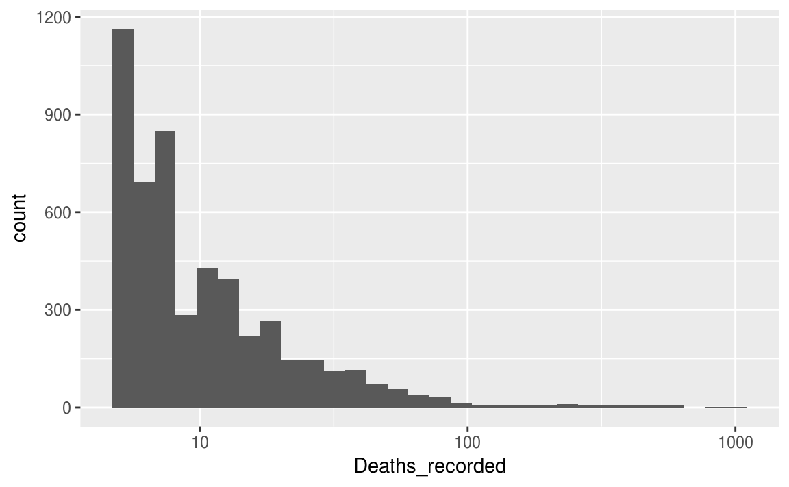
3.9 Inglehart–Welzel: un mapa cultural del mundo
Los teóricos de la modernización de Karl Marx a Daniel Bell han sostenido que el desarrollo económico trae cambios culturales penetrantes. Pero otros, desde Max Weber hasta Samuel Huntington, han afirmado que los valores culturales son una influencia duradera y autónoma sobre la sociedad.
En un artículo de la ciencia política, los autores Inglehart y Welzel de la Universidad de Michigan, afirman que el desarrollo económico está vinculado a cambios sistemáticos en los valores culturales. Utilizando los datos de la encuesta de valores mundiales WVS (World Values Survey), crearon dos índices: uno que pone énfasis en valores tradicionales y otro que pone énfasis en valores de supervivencia.
Características de valores tradicionales en una sociedad:
fuerte sentimiento de orgullo nacional
le da más importancia a que un niño aprenda obediencia y fé religiosa en lugar de independencia y determinación
el aborta nunca es justificada
fuerte sentido de orgullo nacional
favorece más el respeto por la autoridad.
Los valores seculares o racionales enfatizan lo opuesto.
Características de valores de supervivencia en una sociedad:
le da prioridad a la economía sobre la calidad de vida
se describe como no muy feliz
aún no ha firmado o jamás firmaría una petición
la homosexualidad nuna es justificada
se debe ser muy cuidadoso al confiar en las personas.
Los valores de autoexpresión enfatizan lo opuesto.

Ronald Inglehart en su artículo de 1971 The silent revolution in Europe. Intergenerational change in post-industrial societies. publicado en el American Political Science Review, propone una medida de los valores postmaterialistas de una sociedad. Esta medida se conoce como índice post-materialista de Inglehart (4-item) .
La siguiente pregunta de la encuesta es el punto de partida para medir el materialismo o el post-materialismo: “Si tuvieras que elegir entre las siguientes cosas, ¿cuáles son las dos que te parecen más deseables?”
Mantener el orden en la nación.
Dando a la gente más voz en importantes decisiones políticas.
La lucha contra el aumento de los precios.
Proteger la libertad de expresión.
La medida se basa entonces en la observación de que dos de las cuatro opciones, la primera y la tercera, se consideran como “preferencia hacia el valor adquisitivo en relación con la protección y adquisición de bienes”. Si se eligen las dos opciones postmaterialistas, entonces la puntuación es 3. Si se elige sólo una opción post-materialista, entonces la puntuación es 2, y de lo contrario es 1. Como todas las opciones podrían ser deseables, la medida se relaciona con la “prioridad relativa” de las elecciones materialistas sobre la segunda y cuarta y aborda las concesiones que típicamente conllevan las decisiones políticas. La conceptualización del postmaterialismo a lo largo de un continuo unidimensional está cerca del concepto de la “jerarquía de necesidades” propuesta por Maslow.
library(tidyverse)
factores_inglehart <- read_csv(file = "datos/factores_inglehart.csv")
glimpse(factores_inglehart)
#> Observations: 60
#> Variables: 6
#> $ country_code <int> 112, 12, 152, 156, 158, 170, 196, 218,...
#> $ country <chr> "Belarus", "Algeria", "Chile", "China"...
#> $ region <chr> "Eastern Europe", "Northern Africa", "...
#> $ reg <chr> "Europe & Eurasia", "Middle East & Nor...
#> $ traditional_secular <dbl> 0.91766, -0.68003, 0.14525, 1.45307, 1...
#> $ survival_selfexpression <dbl> -0.3187, -0.3300, 1.5769, -0.5487, 0.9...3.9.1 Creando un ggplot
Para graficar factores_inglehart, ejecuta este código para poner survival_selfexpression en el eje x (eje horizontal) y traditional_secular en el eje y (eje vertical):
ggplot(data = factores_inglehart) +
geom_point(mapping = aes(x = survival_selfexpression, y = traditional_secular))
3.9.2 Mapeos: Aesthetics
“The greatest value of a picture is when it forces us to notice what we never expected to see.” — John Tukey
En la gráfica de abajo, un grupo de puntos (en rojo) parece estar fuera de la tendencia lineal. Estos países tienen menores valores de supervivencia de lo que esperaríamos de acuerdo a sus mayores valores de tradicionalismo.
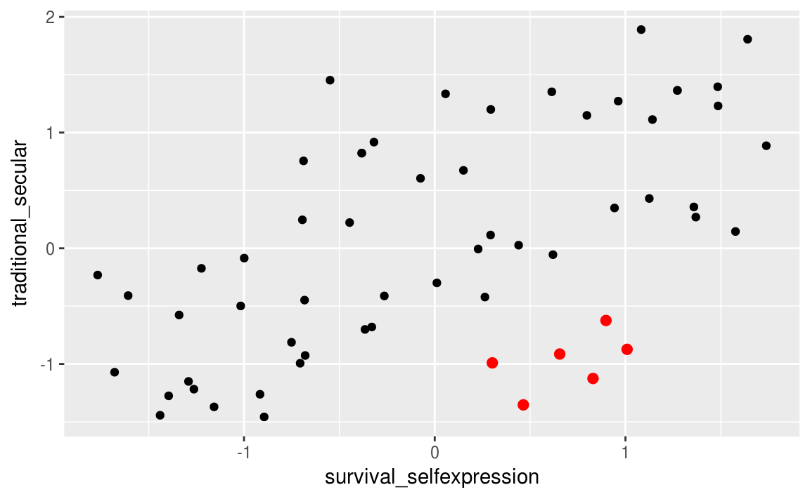
Podemos formular la hipótesis de que se trata de países latinoamericanos. Una forma de probar esta hipótesis es con la variable reg. La variable reg del conjunto de datos factores_inglehart clasifica a los países de acuerdo a su región geográfica.
Podemos agregar una tercera variable, como reg, a un diagrama de dispersión bidimensional asignándolo a un aesthetic o mapeo. Un mapeo es una propiedad visual de los objetos en la gráfica.
Un mapeo incluye cosas como el tamaño, la forma o el color de los puntos. Puede mostrar un punto (como el que se muestra a continuación) de diferentes maneras cambiando los valores de sus propiedades de mapeos.
Aquí cambiamos los niveles de tamaño, forma y color de un punto para hacer que el punto sea pequeño, triangular o azul:
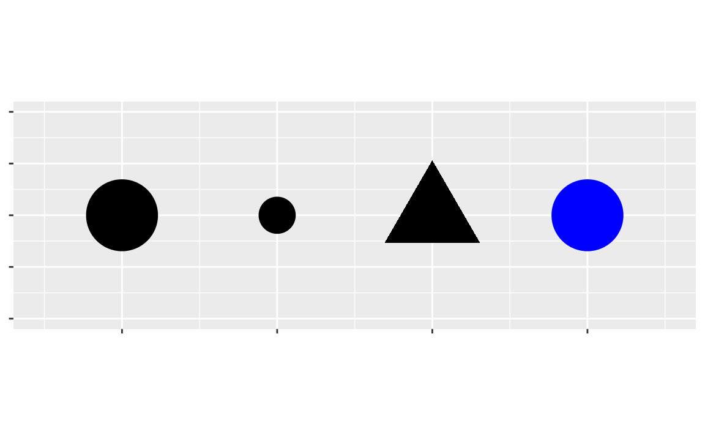
Podemos transmitir información sobre los datos mapeando los aesthetics en la gráfica a las variables del data frame. Por ejemplo, podemos asignar los colores de los puntos a la variable reg para revelar la región de cada país.
ggplot(data = factores_inglehart) +
geom_point(mapping = aes(x = survival_selfexpression, y = traditional_secular, color=reg))
Para asignar una característica a una variable, asociamos el nombre del mapeo al nombre de la variable dentro de aes(). ggplot2 asignará automáticamente un nivel único de dicha característica (o mapeo) a cada valor único de la variable, un proceso conocido como escalamiento. ggplot2 también agregará una leyenda que explique qué niveles corresponden a qué valores.
También podríamos agregar etiquetas:

3.9.2.1 Objetos geométricos
¿En qué se parecen las siguiente dos gráficas?
 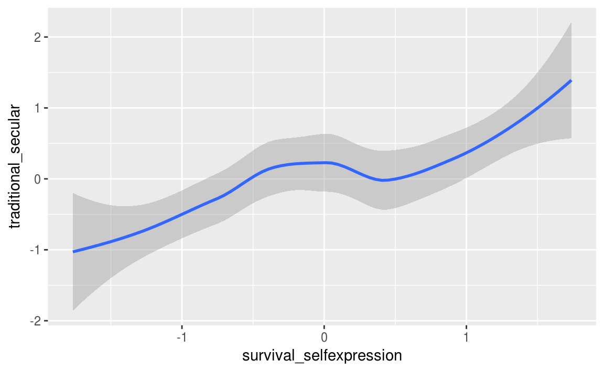
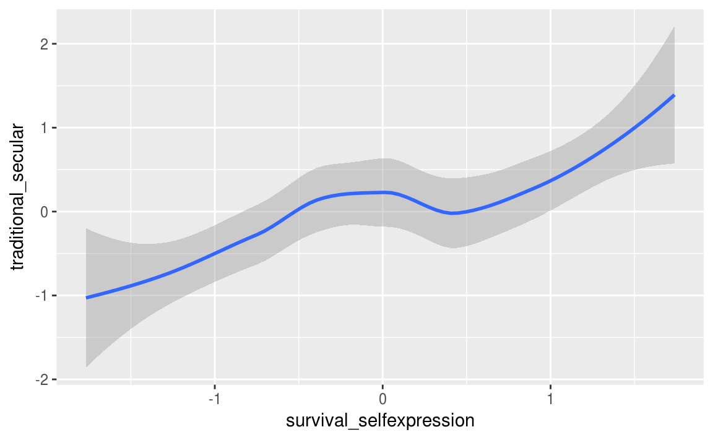
Ambas gráficas contienen la misma variable x, la misma variable y, y ambas describen los mismos datos. Pero las gráficas no son idénticas. Cada una utiliza un objeto visual diferente para representar los datos. En la sintaxis de ggplot2, decimos que usan diferentes geoms.
Un geom es un objeto geométrico que una gráfica utiliza para representar a los datos. La gente a menudo describe las gráficas por el tipo de geometría que usa la gráfica. Por ejemplo, las gráficas de barras usan geometrías de barras, los gráficos de línea utilizan geoms de línea, los boxplots usan geoms de boxplot, y así sucesivamente. Los diagramas de dispersión rompen la tendencia; Utilizan la geometría de punto.
La gráfica de la izquierda utiliza el punto geom, y la gráfica de la derecha utiliza el geom de smooth, una línea ajustada a los datos. Para hacer las gráficas mostradas arriba se puede utilizar el siguiente código.
#izquierda
ggplot(data = factores_inglehart) +
geom_point(mapping = aes(x = survival_selfexpression, y = traditional_secular))
#derecha
ggplot(data = factores_inglehart) +
geom_smooth(mapping = aes(x = survival_selfexpression, y = traditional_secular), method = "loess")Cada función geom en ggplot2 toma un argumento mapping. Sin embargo, no todas las propiedades de aesthetics funciona con cada geom. Podríamos cambiar la forma de un punto, pero no la “forma” de una línea. Por otro lado, podríamos establecer el tipo de línea de una línea. geom_smooth() dibujará una línea diferente, con un tipo de línea diferente, para cada valor único de la variable que se asigna al tipo de línea.
ggplot(data = factores_inglehart) +
geom_smooth(mapping = aes(x = survival_selfexpression, y = traditional_secular, linetype = reg), method = "loess", se = F, span = 1)
Aquí geom_smooth() separa los países en líneas basándose en su valor de reg (región geográfica).
Podemos superponer las líneas encima de los datos sin procesar y luego coloreándolo todo de acuerdo a reg.
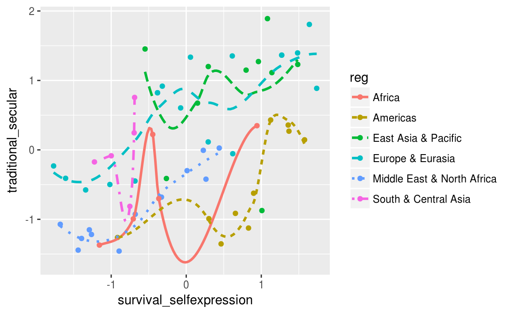
Para mostrar varios geoms en la misma gráfica, agregamos varias funciones geom a ggplot():
ggplot(data = factores_inglehart) +
geom_point(mapping = aes(x = survival_selfexpression, y = traditional_secular)) +
geom_smooth(mapping = aes(x = survival_selfexpression, y = traditional_secular), method = "loess")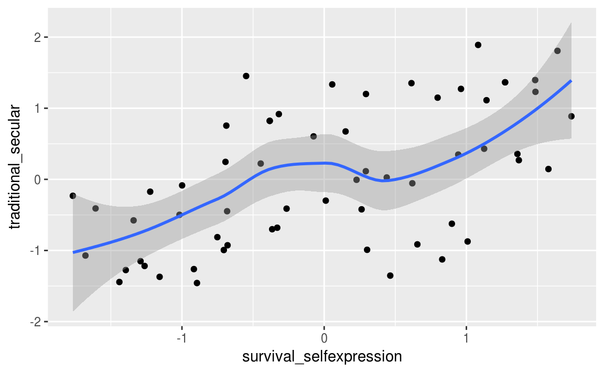
Este código genera la misma gráfica que el código anterior:
ggplot(data = factores_inglehart, mapping = aes(x = survival_selfexpression, y = traditional_secular)) +
geom_point() +
geom_smooth(method = "loess")Si colocan asignaciones en una función geom, ggplot2 las tratará como asignaciones locales para cada capa, de tal forma que usará estas asignaciones para extender o sobrescribir las asignaciones globales para esa capa solamente. Esto hace posible visualizar elementos diferentes en diferentes capas.
ggplot(data = factores_inglehart, mapping = aes(x = survival_selfexpression, y = traditional_secular)) +
geom_point(mapping = aes(color = reg)) +
geom_smooth(method = "loess")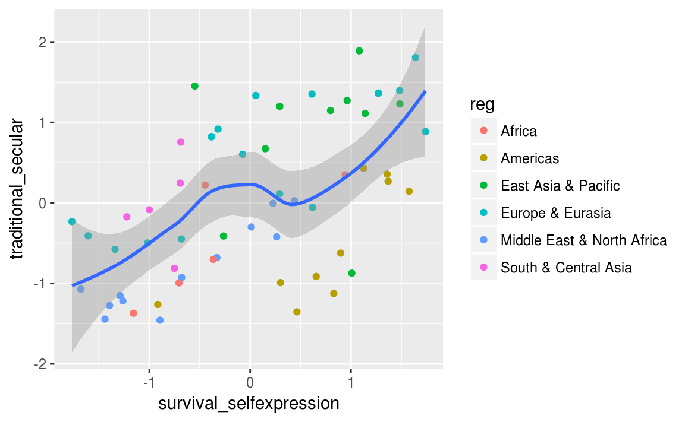
3.10 Poniendo todo junto
El Billboard Hot 100 es un ranking semanal publicado en Estados Unidos y es utilizado en la industria de la música como una medida del rendimiento de las canciones en ventas y en streaming en el país.
Por ejemplo, en la página https://www.billboard.com/charts/hot-100/2000-03-18 se puede consultar el chart en la semana del 18 de marzo del año 2000.

Con el siguiente código podemos descargar los datos del Billboard Hot 100 para cada semana para obtener un conjunto de datos que vamos a utilizar más adelante.
suppressPackageStartupMessages({
library(tidyverse)
library(rvest)
library(lubridate)
})
extract_song_info <- function(html_row) {
node_primary <- html_row %>%
html_node(css = '.chart-row__primary')
node_secondary <- html_row %>%
html_node(css = '.chart-row__secondary')
song_features <- c(
'.chart-row__history--rising',
'.chart-row__bullet',
'.chart-row__history--falling',
'.chart-row__award-indicator',
'.chart-row__new-indicator',
'.chart-row__history--steady')
feat_search <- map(.x = song_features, .f = function(y) {
node_primary %>%
html_nodes(css = y)
})
song_node <- node_primary %>%
html_node(css = '.chart-row__main-display')
info_node <- song_node %>%
html_node(css = '.chart-row__container')
song_name_node <- info_node %>%
html_node(css = '.chart-row__song')
song_artist_node <- info_node %>%
html_node(css = '.chart-row__artist')
song_stats <- node_secondary %>%
html_node(css = '.chart-row__stats')
last_week <- song_stats %>%
html_node(css = '.chart-row__last-week .chart-row__value') %>%
html_text()
peak_position <- song_stats %>%
html_node(css = '.chart-row__top-spot .chart-row__value') %>%
html_text()
wks_on_chart <- song_stats %>%
html_node(css = '.chart-row__weeks-on-chart .chart-row__value') %>%
html_text()
current_week_rank <- node_primary %>%
html_node(css = '.chart-row__current-week') %>%
html_text()
artist <- song_artist_node %>% html_text() %>% str_replace_all('\n','')
name <- song_name_node %>% html_text() %>% str_replace_all('\n','')
song <- tibble(current_week_rank = as.character(current_week_rank),
name = str_trim(as.character(name)),
artist = str_trim(as.character(artist)),
rising = length(feat_search[[1]]) > 0,
steady = length(feat_search[[6]]) > 0,
falling = length(feat_search[[3]]) > 0,
gains_performance = length(feat_search[[2]]) > 0,
award = length(feat_search[[4]]) > 0,
hot_debut = length(feat_search[[5]]) > 0,
last_week = as.character(last_week),
peak_position = as.character(peak_position),
wks_on_chart = as.character(wks_on_chart)
)
cat(sprintf('%-3s\t %-40s\t%s\n', song$current_week_rank, song$artist, song$name))
song
}
billboard_weekchart <- function(fecha){
cat(sprintf('\n\n Fecha: \t%s\n\n', toString(fecha)))
# url base del Billboard Hot 100
base_url <- "http://www.billboard.com/charts/hot-100/"
current_url <- paste0(base_url, fecha)
webpage <- tryCatch(
{
Sys.sleep(5)
read_html(current_url);
},
error=function(cond) {
message("Error: Webpage did not respond succesfully.")
message(cond)
cat('\n\n')
return(NA)
},
finally={
cat('\n')
}
)
if(length(webpage) > 1){
chart <- html_nodes(webpage, css='.chart-data')
rows <-html_nodes(chart, css='.chart-row')
week_songs <- map_df(.x = rows, .f = extract_song_info)
fecha_df <- data.frame(fecha=rep(fecha,nrow(week_songs)))
week_songs <- cbind(fecha_df, week_songs)
}else{
write(toString(fecha), file="/home/andreu/scripts/billboard/missing.txt", append = T)
Sys.sleep(60)
week_songs <- NULL
}
if(length(week_songs) > 0){
write_csv(x = week_songs, path = paste0("/home/andreu/scripts/billboard/data/",fecha,".csv"))
val = T
}else{
val = F
}
val
}
billboard_alltime <- function(start_date = ymd('1958-08-04'), current_date = ymd('2018-02-03')){
file.create("/home/andreu/scripts/billboard/missing.txt")
fechas <- seq(start_date, current_date, by = '1 week')
alltime_songs <- map_lgl(.x = fechas, .f = billboard_weekchart)
alltime_songs
}
alltime_songs <- billboard_alltime(start_date = ymd('2018-02-03'))
paths <- dir("/home/andreu/scripts/billboard/data/", pattern = "\\.csv$", full.names = TRUE)
billboard <- map_df(paths, read_csv, col_types=paste(rep('c', 13), collapse=''))No es necesario entender a profundidad el código utilizado para parsear el html de cada página de Billboard, sin embargo, es interesante ver el uso de las funciones map, map_lgl, y map_df en el fragmento de código anteior.
La función
mapse utiliza en la llamada a la primera funciónextract_song_info. Primero se definen tags del html que se necesitan parsear y posteriormente se utilizamappara buscar cada uno dentro del texto plano en html.La función
map_dfse utiliza para aplicar cada elemento (rengón) del html en una fecha dada la funciónextract_song_infoy el resultado de aplicar esta función a cada renglón del html da como resultado un data frame con los datos de la información de cada canción para cada fecha. Posteriormente, este conjunto de datos se guarda en formato csv.La función
map_lglaplica la funciónbillboard_weekcharta cada elemento de la lista de fecha y regresa un vector lógico que indica si el parseo del html tuvo éxito para cada una de las fechas.La función
map_dfal final del fragmento de código lee todos los archivos correspondientes a las fechas utilizadas y como resultado junta todos los data frames en uno solo.
Una muestra de los datos obtenidos se puede ver en la siguiente tabla:
billboard %>% sample_n(10) %>%
knitr::kable("html") %>%
kableExtra::kable_styling(font_size = 10)| fecha | current_week_rank | name | artist | rising | steady | falling | gains_performance | award | hot_debut | last_week | peak_position | wks_on_chart |
|---|---|---|---|---|---|---|---|---|---|---|---|---|
| 2010-06-21 | 23 | Undo It | Carrie Underwood | TRUE | FALSE | FALSE | TRUE | FALSE | FALSE | 25 | 23 | 7 |
| 1996-11-18 | 59 | Knocks Me Off My Feet | Donell Jones | TRUE | FALSE | FALSE | TRUE | FALSE | FALSE | 67 | 59 | 4 |
| 2007-04-23 | 19 | Go Getta | Young Jeezy Featuring R. Kelly | FALSE | FALSE | TRUE | FALSE | FALSE | FALSE | 18 | 18 | 13 |
| 1996-07-01 | 13 | Twisted | Keith Sweat | TRUE | FALSE | FALSE | TRUE | FALSE | FALSE | 21 | 13 | 3 |
| 1968-04-22 | 41 | She’s Lookin’ Good | Wilson Pickett | TRUE | FALSE | FALSE | FALSE | FALSE | FALSE | 45 | 41 | 3 |
| 1980-04-21 | 18 | Hurt So Bad | Linda Ronstadt | TRUE | FALSE | FALSE | FALSE | FALSE | FALSE | 23 | 18 | 3 |
| 1965-12-27 | 3 | I Got You (I Feel Good) | James Brown And The Famous Flames | FALSE | TRUE | FALSE | FALSE | FALSE | FALSE | 3 | 3 | 8 |
| 2006-01-16 | 45 | Heard ’Em Say | Kanye West Featuring Adam Levine | FALSE | FALSE | TRUE | FALSE | FALSE | FALSE | 40 | 26 | 13 |
| 1967-04-24 | 8 | The Happening | The Supremes | TRUE | FALSE | FALSE | FALSE | FALSE | FALSE | 11 | 8 | 4 |
| 1980-04-14 | 75 | Steal Away | Robbie Dupree | TRUE | FALSE | FALSE | FALSE | FALSE | FALSE | 85 | 75 | 2 |
Veamos de qué tipos son cada una de las columnas en los datos. Podemos usar nuevamente la función glimpse:
glimpse(billboard)
#> Observations: 310,500
#> Variables: 13
#> $ fecha <date> 1958-08-04, 1958-08-04, 1958-08-04, 1958-08...
#> $ current_week_rank <int> 1, 2, 3, 4, 5, 6, 7, 8, 9, 10, 11, 12, 13, 1...
#> $ name <chr> "Poor Little Fool", "Patricia", "Splish Spla...
#> $ artist <chr> "Ricky Nelson", "Perez Prado And His Orchest...
#> $ rising <lgl> FALSE, FALSE, FALSE, FALSE, FALSE, FALSE, FA...
#> $ steady <lgl> FALSE, FALSE, FALSE, FALSE, FALSE, FALSE, FA...
#> $ falling <lgl> FALSE, FALSE, FALSE, FALSE, FALSE, FALSE, FA...
#> $ gains_performance <lgl> FALSE, FALSE, FALSE, FALSE, FALSE, FALSE, FA...
#> $ award <lgl> FALSE, FALSE, FALSE, FALSE, FALSE, FALSE, FA...
#> $ hot_debut <lgl> FALSE, FALSE, FALSE, FALSE, FALSE, FALSE, FA...
#> $ last_week <chr> "--", "--", "--", "--", "--", "--", "--", "-...
#> $ peak_position <int> 1, 2, 3, 4, 5, 6, 7, 8, 9, 10, 11, 12, 13, 1...
#> $ wks_on_chart <int> 1, 1, 1, 1, 1, 1, 1, 1, 1, 1, 1, 1, 1, 1, 1,...Supongamos que deseamos hacer una gráfica de barras del número de semanas en el top 10 para los 20 artistas que más semanas han permanecido en el top 10.
artistas_top10 <- billboard %>%
filter(current_week_rank >= 10) %>%
group_by(artist) %>%
summarise(num_semanas_top_10 = n()) %>%
arrange(desc(num_semanas_top_10)) %>%
top_n(20, wt = num_semanas_top_10)Para hacer la gráfica con ggplot debemos primero ordenar los artistas de manera descendente por el número de semanas en el top 10. Para esto utilizamos la función de fct_reorder del paquete forcats.
artistas_top10$artist <- forcats::fct_reorder(.f = artistas_top10$artist,
.x = artistas_top10$num_semanas_top_10,
.desc = T)Por último, hacemos la gráfica indicando a geom_bar que la transformación estadística que debe usar es la de identity, es decir, la longitud de la barra corresponde al valor absoluto de la variable num_semanas_top_10:
ggplot(artistas_top10, aes(x = artist, y = num_semanas_top_10)) +
geom_bar(stat = 'identity') +
theme(axis.text.x = element_text(angle = 45, hjust = 1, vjust = 1))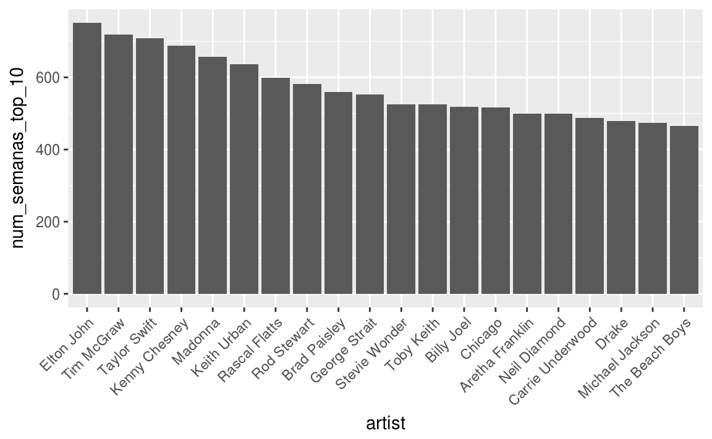
3.11 Tarea
Utiliza los datos del Billboard Hot 100 para contestar las siguientes preguntas:
¿Cuáles son los 10 artistas que han tenido más #1’s en la historia de Billboard?
¿Cuáles son los 10 artistas que han tenido más #1’s en los últimos 10 años? Realiza una gráfica de barras para responder a la pregunta.
¿Cómo se ha comportado el número promedio de semanas que una canción ha estado en el #1 a través de la historia?
¿Existe alguna relación entre el número de presentaciones en vivo (
gains_performance) y el número de semanas que permance una canción en #1 desde 1980?Para algunos últimos singles que han permanecido más semanas en el Hot 100 en algunos meses realiza una gráfica de su posición en el tiempo semana a semana. Puedes elegir alguna fecha que te interese, la fecha de tu cumpleaños o la fecha en que estuvo en #1 tu canción favorita.
Referencias
Tufte, Edward, and P Graves-Morris. 2014. “The Visual Display of Quantitative Information.; 1983.”